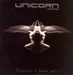

| Artist: | Various Artists |
| Title: | Progression In Balance Vol 1 |
| Label: | Unicorn Records UNCR 5010 |
| Length(s): | 72 minutes |
| Year(s) of release: | 2004 |
| Month of review: | [03/2005] |
| 1) | Addison Project - The Lost Train | 6.06 |
| 2) | Spaced Out - The 5th Dimension | 6.33 |
| 3) | Heon - Reaching For The Sky | 2.27 |
| 4) | Heon - Amazed By Beauty | 2.40 |
| 5) | Talisma - Satanusky | 3.40 |
| 6) | Martin Maheux Circle - Red Shift | 4.35 |
| 7) | Mystery - Theatre Of The Mind | 6.01 |
| 8) | Spaced Out - The Last Train | 6.16 |
| 9) | Xinema - Blind Is The Light | 6.54 |
| 10) | Mystery - Queen Of Vajra Space | 9.30 |
| 11) | Spaced Out - Slow Gin | 8.06 |
| 12) | Hamadryad - Still They Laugh | 2.18 |
| 13) | Hamadryad - The Second Round | 4.30 |
| 14) | Hamadryad - Still They Laugh II | 2.26 |
Spaced Out's attribution from the debut (The 5th Dimension) is freaky jazzrock, more so than the experimental style of the track off the second album (The Last Train). The differences between the two tracks are remarkable. The band's final offering (Slow Gin) is the most balanced and most challenging one. There is speed and technique, yet in combination with experiment and melody. The result is quite worthwhile.
Heon (Reaching For The Sky - Amazed By Beauty) starts off with a sampled bird-like sound slowing floating into instrumental music. Talisma (Satanusky) comes up with an original title, but limits the music to pretty basic modern jazzrock. Martin Maheux Circle (Red Shift) has a bit of a jazzmatazz/St Germain style, although the style might be a bit more animated. Trumpet and acoustic bass play an important role. Not very progressive, but worthwhile in its genre.
Mystery is the first vocal band on the disc. Theatre Of The Mind is a light progressive track with slightly harder guitars, flat drumming and vocals somewhat short of liveliness. This is from the band's 1996 album. The band's second offering (from their 1998 release Destiny?) is less stinted, more fluent, showing clear improvement, while maintaining a degree of accessibility that's near superficiality.
Xinema (Blind Is The Light) is represented with a track opening somewhat jazzily, with some hard edges, but the vocals lead to easier waters, with a highly melodic chorus. The latter indicating the band's style. The instrumental variety is belied by the at times choppy drums and somewhat plain guitar solo. A band that has the ideas but can't fully channel it into good songs.
Hamdryad's closing is a threepiece combining melodic, progressive and some moderate metallic influences into a flashing whole. My favourite material on this disc. And combined with the final Spaced Out it makes for a rather grand finale to this sampler.